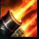

Gangplank
| Gangplank The Saltwater Scourge | |
|---|---|
| Release date | 19.08.2009 |
| Class | Specialist |
| Positions | Top |
| Resource | Mana |
| Range type | Melee |
| Adaptive type | Physical |
| Base statistics | |||
| Health | 540 – 1934 | Mana | 280 – 1300 |
| Health regen. | 6 – 16.2 |
Mana regen. | 7.5 – 19.4 |
| Armor | 35 – 86 | Attack damage | 64 – 132 |
| Magic resist. | 32 – 53.25 | Crit. damage | 175% |
| Move. speed | 345 | Attack range | 125 |
Gangplank este fostul rege al tâlharilor, un individ temut, imprevizibil și brutal. Mai demult, era stăpân peste orașul-port Bilgewater și, cu toate că a fost îndepărtat de la putere, mulți cred că astfel a ajuns și mai periculos decât înainte. Gangplank ar prefera să scalde orașul în sânge decât să-l lase pe mâna altcuiva. Acum, cu pistolul, hangerul și butoaiele cu praf de pușcă la îndemână, e hotărât să recucerească tot ce a pierdut. | PROBA FOCULUI O dată la câteva secunde, următorul atac melee al lui Gangplank îi dă foc adversarului. |
|||
|---|---|---|---|---|
NEGOCIERE Împușcă ținta și fură aur pentru fiecare unitate inamică ucisă. |
||||
VINDECARE DE SCORBUT Gangplank mănâncă portocale pentru a se vindeca de efectele de control al maselor și a-și reface o parte din viață. |
||||
| BUTOI DE PULBERE Gangplank aruncă un butoi de pulbere în zona-țintă. Atunci când atacă un butoi, acesta explodează și provoacă daune AoE, încetinind toți inamicii din apropiere. |
||||
 |
RAFALĂ DE TUN Gangplank îi ordonă corabiei sale să tragă cu ghiulele într-o anumită zonă, încetinindu-și inamicii și provocându-le daune. |